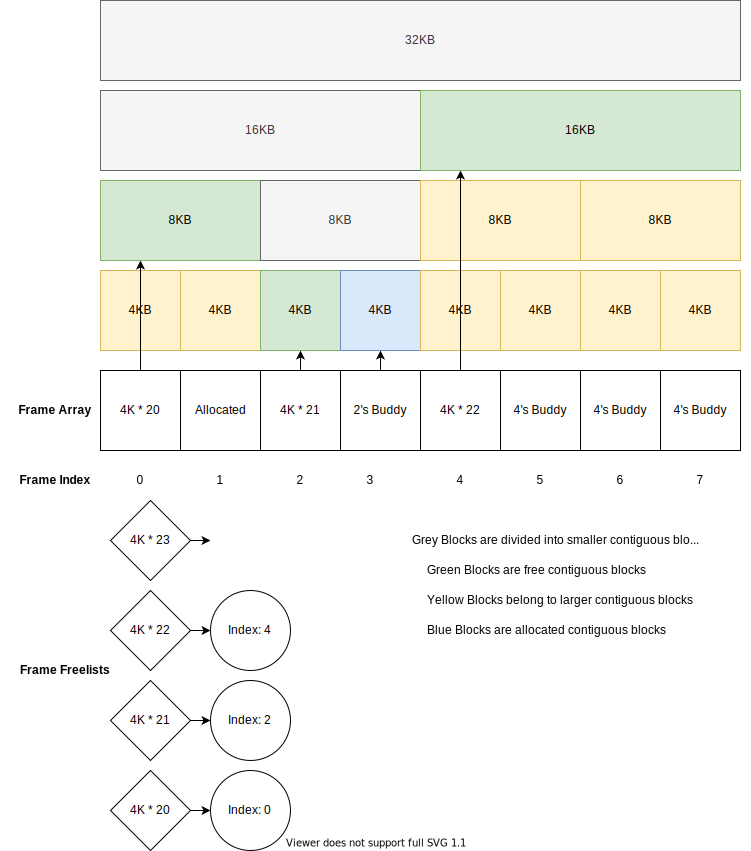

Lab 3: Allocator¶
Introduction¶
A kernel allocates physical memory for maintaining its internal states and user programs’ use. Without memory allocators, you need to statically partition the physical memory into several memory pools for different objects. It’s sufficient for some systems that run known applications on known devices. Yet, general-purpose operating systems that run diverse applications on diverse devices determine the use and amount of physical memory at runtime. Therefore, dynamic memory allocation is necessary.
In Lab 3, you need to implement memory allocators. They’ll be used in all later labs.
Goals of this lab¶
Implement a page frame allocator.
Implement a dynamic memory allocator.
Implement a startup allocator.
Background¶
Reserved Memory¶
After rpi3 is booted, some physical memory is already in use.
For example, there are already spin tables for multicore boot(0x0000 - 0x1000), flatten device tree,
initramfs, and your kernel image in the physical memory.
Your memory allocator should not allocate these memory blocks if you still need to use them.
Dynamic Memory Allocator¶
Given the allocation size, a dynamic memory allocator needs to find a large enough contiguous memory block and return the pointer to it. Also, the memory block would be released after use. A dynamic memory allocator should be able to reuse the memory block for another memory allocation. Reserved or allocated memory should not be allocated again to prevent data corruption.
Page Frame Allocator¶
You may be wondering why you are asked to implement another memory allocator for page frames. Isn’t a well-designed dynamic memory allocator enough for all dynamic memory allocation cases? Indeed, you don’t need it if you run applications in kernel space only.
However, if you need to run user space applications with virtual memory, you’ll need a lot of 4KB memory blocks with 4KB memory alignment called page frames. That’s because 4KB is the unit of virtual memory mapping. A regular dynamic memory allocator that uses a size header before memory block turns out half of the physical memory can’t be used as page frames. Therefore, a better approach is representing available physical memory as page frames. The page frame allocator reserves and uses an additional page frame array to bookkeep the use of page frames. The page frame allocator should be able to allocate contiguous page frames for allocating large buffers. For fine-grained memory allocation, a dynamic memory allocator can allocate a page frame first then cut it into chunks.
Observability of Allocators¶
It’s hard to observe the internal state of a memory allocator and hence hard to demo. To check the correctness of your allocator, you need to print the log of each allocation and free.
Note
TAs will verify the correctness by these logs in the demo.
Required¶
In the required part, your allocator doesn’t need to deal with the reserved memory problem. You can find an unused memory region (e.g. 0x1000_0000 -> 0x2000_0000) and manage that part of memory only.
Requirement 1¶
Buddy System¶
Buddy system is a well-known and simple algorithm for allocating contiguous memory blocks. It has an internal fragmentation problem, but it’s still suitable for page frame allocation because the problem can be reduced with the dynamic memory allocator. We provide one possible implementation in the following part. You can still design it yourself as long as you follow the specification of the buddy system.
required 1 Implement the buddy system for contiguous page frames allocation.
Note
You don’t need to handle the case of out-of-memory.
Data Structure¶
The Frame Array (or “The Array”, so to speak)
The Array represents the allocation status of the memory by constructing a 1-1 relationship between the physical memory frame and The Array’s entries. For example, if the size of the total allocable memory is 200kb with each frame being 4kb. Then The Array would consist of 50 entries, with the first and the second entry representing memory addresses starts from 0x0 and 0x1000(4k).
However, to describe a living Buddy system with The Array, we need to provide extra meaning to items in The Array by assigning values to them, defined as followed:
- For each entry in The Array with index \(\text{idx}\) and value \(\text{val}\)
(Suppose the framesize to be
4kb)- if \(\text{val} \geq 0\):
There is an allocable, contiguous memory that starts from the \(\text{idx}\)’th frame with \(\text{size} = 2^{\text{val}}\) \(\times\)
4kb.- if \(\text{val} = \text{<F>}\): (user defined value)
The \(\text{idx}\)’th frame is free, but it belongs to a larger contiguous memory block. Hence, buddy system doesn’t directly allocate it.
- if \(\text{val} = \text{<X>}\): (user defined value)
The \(\text{idx}\)’th frame is already allocated, hence not allocable.
Below is the generalized view of The Frame Array:
You can calculate the address and the size of the contiguous block by the following formula.
\(\text{block's physical address} = \text{block's index} \times 4096 + \text{base address}\)
\(\text{block's size} = 4096 \times 2^\text{block's exponent}\)
Linked-lists for blocks with different size¶
You can set a maximum contiguous block size and create one linked-list for each size. The linked-list links free blocks of the same size. The buddy allocator’s search starts from the specified block size list. If the list is empty, it tries to find a larger block in a larger block list
Release redundant memory block¶
The above algorithm may allocate one block far larger than the required size. The allocator should cut off the bottom half of the block and put it back to the buddy system until the size equals the required size.
Note
You should print the log of releasing redundant memory block for the demo
Free and Coalesce Blocks¶
To make the buddy system contains larger contiguous memory blocks. When the user frees the allocated memory block, the buddy allocator should not naively put it back to the linked-list. It should try to Find the buddy and Merge iteratively.
Find the buddy¶
You can use the block’s index xor with its exponent to find its buddy. If its buddy is in the page frame array, then you can merge them to a larger block.
Merge iteratively¶
There is still a possible buddy for the merged block. You should use the same way to find the buddy of the merge block. When you can’t find the buddy of the merged block or the merged block size is maximum-block-size, the allocator stops and put the merged block to the linked-list.
Note
You should print the log of merge iteration for the demo.
Requirement 2¶
Dynamic Memory Allocator¶
Your page frame allocator already provides the functionality for large contiguous memory allocation. Your dynamic memory allocator only needs to add a wrapper to translate a page frame to its physical address. For small memory allocation, you can create several memory pools for some common size such as [16, 32, 48, 96 …]. Then, partition page frames into several chunk slots. When there is a memory allocation request, round up the requested allocation size to the nearest size and check if there is any unallocated slot. If not, allocate a new page frame from the page allocator. Then, return one chunk to the caller. Objects from the same page frame have a common prefix address. The allocator can use it to determine the memory pool the chunk belonged to when it’s freed.
required 2 Implement a dynamic memory allocator.
Elective¶
Startup Allocator¶
In general purpose operating systems, the amount of physical memory is determined at runtime. Hence, a kernel needs to dynamically allocate its page frame array for its page frame allocator. The page frame allocator then depends on dynamic memory allocation. The dynamic memory allocator depends on the page frame allocator. This introduces the chicken or the egg problem. To break the dilemma, you need a dedicated allocator during startup time.
The design of the startup allocator is quite simple. Just implement a dynamic memory allocator not based on the page allocator. It records the start address and size of the allocated and reserved blocks in a statically allocated array. If there are not many memory holes in the physical memory, it can bookkeep with a minimum number of entries.
Your startup allocator should be able to reserve memory for the buddy system, kernel, initramfs, etc. In the end, it hands the physical memory to the buddy system. The buddy system should mark the reserved segment as allocated.
elective 1 Implement a startup allocator.
Note
Your startup allocator should still work when the memory size is large or contains memory holes.
Reserved memory block detection is not part of the startup allocator. You can either find a way to get those information or hard code it. Then call the startup allocator’s API to reserve those regions.